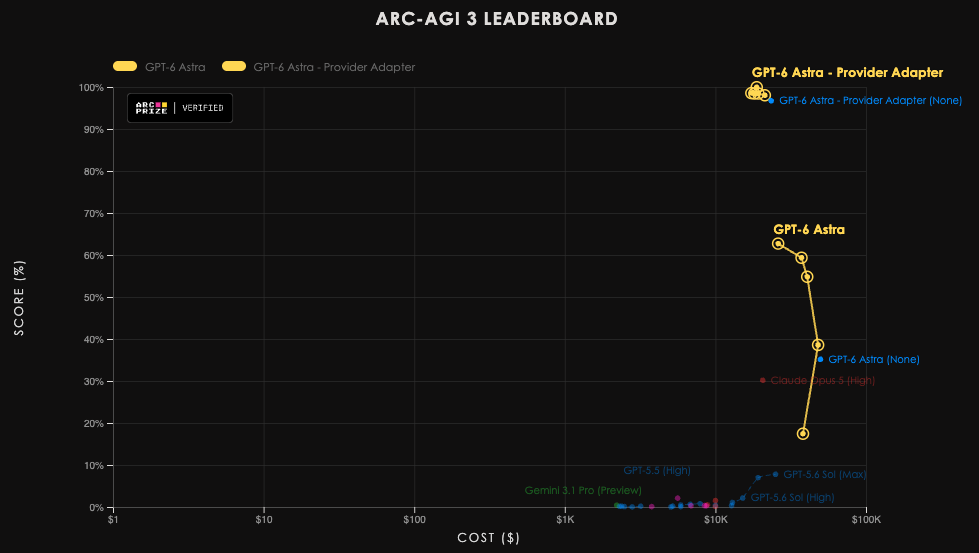
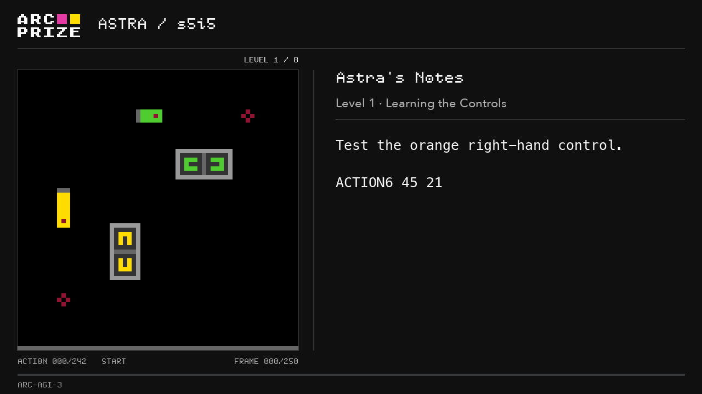
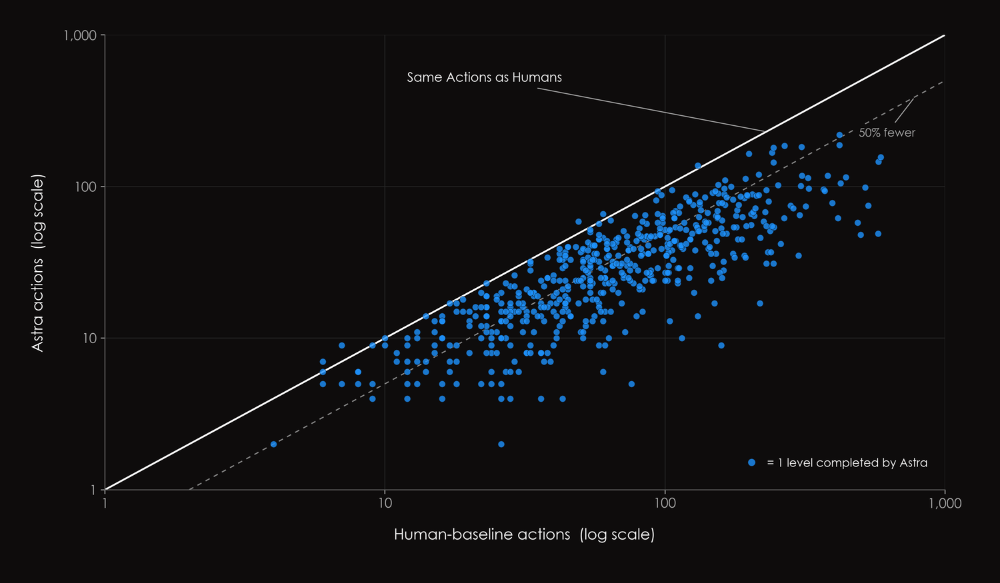
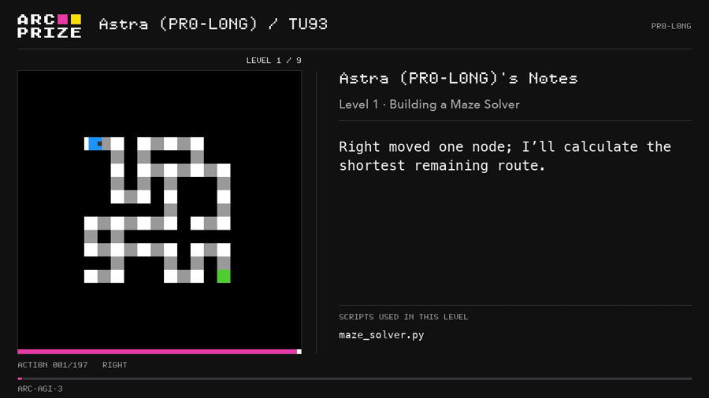

ARC Prize在官方博客公布了OpenAI GPT-6 Astra在ARC-AGI-3（第三代交互式benchmark）上的成绩：Standard harness下62.7%（$26K），切到Provider Adapter harness后飙到99.9%（$19K）：两者都是目前最强。
比起分数，真正让人注意的是它带来的「行为」变数：把陌生的游戏机制压缩成自带符号语言的紧凑世界模型、在每个关卡用手少于真人中位数，以及在一个沙箱harness里为每局现造一把工具。下面把结果、方法与ARC Prize自己的解读逐条还原。
ARC-AGI-3是ARC-AGI系列的第三代，为「代理式智能（agentic intelligence）」设计：给出新颖、抽象、回合制的环境，代理须在无明确指令下自己探索、推断目标、建立环境的内部模型来规划动作：目标是度量「当前AI与AGI之间的残差」。
它测四项能力：探索（信息不会被动送上门，须与环境互动去拿）、建模（把原始观察变成能预测后续状态的通用模型）、目标设定（只有稀疏奖励下识别目标未来态）、规划与执行（找出并执行通往目标的路径，随新信息出现修正）。
这些环境只含核心常识先验，且用真人受控测试校准难度：人类目前的解法率是100%。
Standard harness下，OpenAI的Astra（max级推理）在ARC-AGI-3 Semi-Private上拿到62.7%、花费 $26K；换到Provider Adapter harness，Astra（high）冲到99.9%、只要 $19K。两套都是当前排行榜最优。
原文点了一句很关键：At max reasoning effort, Astra solves games more efficiently, requiring fewer actions and therefore lowering total cost relative to the other reasoning-effort levels（在最高推理强度档，Astra反而解局更高效：用更少的动作、从而相对其它推理档跑得更便宜）。换句话说，对Astra这种“想清楚了再动”的模式，更大推理预算不仅不亏，还会因省下大量动作而把总成本压更低。

人类对比的账目ARC Prize也算过：受控测试里每位参与者一场90分钟付 $115 + 每局 $5，一场约解9个游戏，即约 $12.78/局。大头付的是参与者的时间与意愿而非「脑力」：若只按脑代谢能量、以电价折算，估算低到约0.6美分/场、0.067美分/局。
分数之外，Astra的回放显示它把陌生的游戏机制改写成能用的工作模型。作者观察到的第一件反常事：它会选一段要「带在身上」的策略笔记，把对象、坐标、规则、未完成的计划都track住，还顺手用了自己为这局现造的领域语言记号。
物体会落成这种紧凑的「代码般的符号模型」：记录层级、局部旋转索引、机构长度：例如 `L8: hub q2 (8↓). Lengths: 14=1…`；多步计划写成有序动作序列 `extend8 to3; retract10 to2; shorten8 to1`；控件与坐标映射成 `9−=(39,4), rotate=(49,18)`；回合加位置朝向记成 `Turn 5: P=(24,20), empty, facing west`。
作者强调这是「实时生成的代数简写」，不是完整编程语言：但信息密度与精确度都显著。它把场景蒸馏成状态＋交互规则＋按序要发生什么。

发布ARC-AGI-3前，ARC Prize用约500名大众（非解谜高手筛选）测出了动作效率的人类基线：每个关卡取「完成者的中位动作数」作参考线。
Provider Adapter harness里Astra（max）在96.0% 的关卡上动作数低于人类基线，平均每关少51.7% 动作。ARC称之为实质里程碑：按这套动作效率口径，Astra已达到并超过人类水平。
作者坦言他们原本预期动作效率会长期是人与AI的分水岭：以为就算AI解出环境，也需要比人多得多的探索。对暴力搜索确实如此；但前沿模型呈现更像「二值」的模式：一旦真「理解」机制，执行步数就落回人类量级。
这也是ARC-AGI-3要量动作效率而非仅完成度的原因：只看完成会告诉你解没解，却看不出「学习来解决有多省」。多数benchmark只量算力成本，动作效率量的却是「体验这个环境需要多少交互」。

另一个harness是PRO-LONG：ARC-AGI-3早期的红队伙伴（paper已发布）。这个进阶环境给Astra一个能执行代码的沙箱。
作者看到Astra会为一局造一套定制工具：棋盘解析器、游戏状态模型、搜索算法、规划器，还有持久化的笔记；更复杂的局里甚至掏出小型的「局专用软件库」。
例子是迷宫守卫关tu93：Astra先写导航、产出maze_solver.py，再加战斗规则（combat_solver.py）、建模移动巡逻（patrol_solver.py），再用sync_state.py对模型预测与实际观察。

作者也谨慎地说明边界：这不同于受控真人测试（那些参与者没有代码解释器/草稿纸），所以PRO-LONG的结果应理解成「模型＋它的工具」的合力，而非裸模型水准。
ARC-AGI-3用两套设置回答两个不同问题。Standard harness要模型在最小、provider中立的统一接口里解题：给足每局所需信息，但保不保存哪些笔记由模型自己决定：ARC相信未来AGI应该在这种最小条件里也能解。
Provider Adapter则问另一个问题：把模型用其provider为其设计的上下文管理（Astra就是跨请求保留不透明推理状态 + 用compaction管长对话）让进来，上限能到哪？实际观察：Provider Adapter下Astra从62.7%→99.9%，且按累计墙钟时间约3.66× 更快、在两套harness都解出的167个「游戏-推理」对上少用49% token。今后leaderboard会把两种条件分开标注。
最后是ARC Prize反复钉的一句话：饱和benchmark ≠ 证明AGI。他们认为Astra代表向泛化的实质进展、是前沿能力的阶变点，但ARC-AGI-3范围受限：环境确定、闭环，不承载真实世界的复杂与开放。下一个难题是他们想探讨的递归自我改进与开放式创新如何评测：Astra的进步正好在帮这些仍开放的问题划清边界。
参考：https://arcprize.org/blog/astra